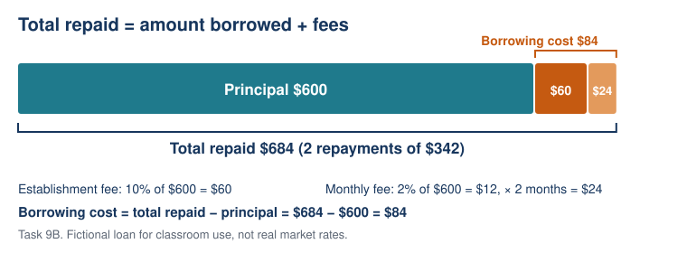

Lesson 9: Short-term Small Loans: Comparing Borrowing Costs
Year level: Year 10 — Stage 5Duration: 60 minutesFocal concept/topic: Short-term Small Loans: Comparing Borrowing Costs | |
Lesson aim: Calculate and compare borrowing costs for small short-term loans and assess independent spending reasoning. | |
Learning intention: We are learning to compare loan costs using the amount borrowed, stated charges and repayment schedule. Success criteria: □ I can calculate a percentage fee based on the original amount borrowed. | |
Syllabus outcomes and content: NSW Mathematics K–10 Syllabus (NESA, 2022).
| Working Mathematically indicators:
|
ICT: Build a comparison model and change loan duration while holding principal and fee basis constant. Check outputs against hand arithmetic and interpret the crossover. | LIT:
|
Prerequisite knowledge:
No reducing-balance or compound-interest calculation is assumed. | Resources:
|
Labels used in this plan: WM Working Mathematically LIT Literacy ICT Technology AfL Assessment for learning AoL Assessment of learning
Key teacher question → Expected: suggested student response. Self-designed WM indicators are in italics.
Teaching sequence
| Steps & timing | Teaching & learning activities |
|---|---|
| ORIENTATION0–8 minRetrieval | Teacher: Address a Lesson 8 charge error and introduce LI/SC. Task 9A distinguishes total repaid and cost. Students: Respond independently. AfL If students say $540 is borrowing cost, use borrowed/returned/extra rows. |
| ENHANCING8–20 minExplicit model | Teacher: Model Task 9B. Identify exactly what the percentage applies to; draw the monthly schedule. Students: Complete labelled principal, fees, total and cost rows. WM LIT Explain why the same principal is counted once. |
| ENHANCING20–25 minHinge and response | Task 9C: simultaneous individual response. AfL Reteach fee base or omitted principal when needed; use fresh check before the comparison. |
| ENHANCING25–38 minICT comparison | Students: Calculate Task 9D by hand, then build formulas and test durations 2, 3 and 4 months. Swap checking/entry roles. ICT WM Predict whether the cheaper offer changes before changing inputs. AfL Teacher checks original-principal fee base and month count. |
| ENHANCING38–43 minInterpretation | Use Task 9E. Students: Identify lower cost separately from the payment ceiling; explain missing information and the possibility of delaying. LIT WM Use numerical evidence rather than naming one universally “best” loan. |
| SYNTHESIZING43–55 minIndependent spending assessment | AoL Task 9F, completed individually with calculator; no peer/spreadsheet help. Teacher: Collect as evidence of spending content and mathematical reasoning. Assessment covers this component only; group must assess remaining unit content elsewhere. |
| SYNTHESIZING55–60 minReview and next steps | After collecting work, students self-check against success criteria; teacher revisits principal / total / cost distinctions. AfL next steps: Feedback groups for percentage-base, charge-count or interpretation errors. Contingency: Shorten the preceding discussion to preserve 12-minute assessment. |
Worked solutions
9A: Borrow $500 and repay $540 altogether. Borrowing cost = $540 − $500 = $40. Total repaid is $540.
9B: Fictional loan of $600 for two months. Establishment fee 10% of original principal; monthly fee 2% of original principal for each month; no other charges or interest. Fees are included in two equal monthly repayments; no upfront fee. Establishment $60; monthly fee $12; two months $24; borrowing cost $84; total $684; each repayment $342. These fee rates are invented teaching inputs, not actual or permitted market rates.
9C Hinge: Borrow $400 for two months; establishment $40; monthly fee $8; fees included in repayments. Total repaid? A $48, B $56, C $448, D $456. Correct D = 400+40+2×8. A uses one month and omits principal; B omits principal; C uses one month. Fresh check: borrow $300, establishment $30 and $6 per month for two months → $342 total and $42 cost.
9D: Both fictional offers lend $800 for three months, with fees included in three monthly repayments. L: establishment fee 10% of original principal, plus 2% of original principal per month. M: $50 establishment plus $30 per month. No other charges or interest. Neither fee uses a reducing balance.
| Quantity | L | M |
|---|---|---|
| Establishment | $80 | $50 |
| Monthly fee | $16 | $30 |
| Fees over 3 months | $48 | $90 |
| Borrowing cost | $128 | $140 |
| Total repaid | $928 | $940 |
| Repayment schedule | $309.33, $309.33, $309.34 | $313.33, $313.33, $313.34 |
Spreadsheet inputs: B1 principal 800; B2 months 3. L total = B1+B1*10%+B1*2%*B2. M total = B1+50+30*B2. Cost = total−B1. Two months: L $912, M $910 (M cheaper by $2). Three: L $928, M $940 (L cheaper by $12). Four: L $944, M $970 (L cheaper by $26). At three months, round the first two payments to cents and adjust the final payment to preserve the exact total. Paper fallback: evaluate the same expressions in a table.
9E: Buyer has a stated ceiling of $310 per month. At three months, L’s three payments fit, M’s do not. L also costs $12 less. This does not prove affordability: other expenses, income reliability and contractual eligibility are unknown. Ask why changing duration can change the cheaper offer: L has a larger establishment fee but a smaller monthly fee. Extension: 880+16m=850+30m → m=30/14≈2.14 months; for whole-month terms M is cheaper at 1–2 months, L from 3 months.
Task 9F — independent assessment and marking guide (12 marks)
Q1 (4 marks): Cash price $750. Deposit 20%, then $60 monthly for 12 months. Calculate deposit, repayment total, total paid and additional cost. Answers: $150; $720; $870; $120. Award one mark per correct quantity with identifiable working; follow through a single earlier arithmetic error when the later process is correct.
Q2 (3 marks): $240 item; four $60 payments including today; $2 account charge at each date; one additional $8 fee for exactly one late payment. Find on-time total and specified late total; explain whether interest-free necessarily means no charges. Answers: $248 (1); $256 (1); no — the stated fees add cost (1).
Q3 (5 marks): Borrow $500 for two months. A: $40 establishment and $10 per month. B: establishment 8% of original principal and $15 per month. All fees included in two equal repayments; no other charges or interest. Find each total and borrowing cost; recommend the lower-cost offer using the difference. Answers: A total $560, cost $60; B establishment $40, total $570, cost $70. A costs $10 less. Award A total (1), A cost (1), B total (1), B cost (1), numerical justification (1). Do not require a claim of genuine affordability.
Interpretation of evidence: Review success criteria by item, not only score. Q1 tests deposit/payment coordination; Q2 tests charge interpretation; Q3 tests loan comparison. Provide feedback on structural errors before more complex tasks. These are teacher-designed assessment criteria, not school reporting grades.
Adjustments and anticipated misconceptions
| Barrier / misconception | Specific support and retained demand |
|---|---|
| Uses monthly repayment as percentage base | Colour-code original principal and circle the fee basis; keep the same comparison. |
| Double-counts included fees | Write total = principal + all charges, then split that total into repayments; do not add charges again. |
| Confuses loan cost with total | Use original / returned / extra labels and require subtraction. |
| Language / executive-function needs | Chunk offer cards; provide calculation rows and read directions aloud without supplying answers. Retain individual reasoning. |
| High prior attainment | Use crossover equation and explain why the whole-month decision differs from the fractional equality. |
Vocabulary
| Term | Student-friendly definition |
|---|---|
| Principal | Original amount borrowed in these offers. |
| Establishment fee | One-off charge for setting up the loan. |
| Fee basis | The amount on which a percentage fee is calculated. |
| Loan term | Time over which the loan is repaid. |
| Total repaid | All payments returned to the lender, including stated charges. |
| Borrowing cost | Total repaid minus the amount borrowed. |
| Repayment ceiling | A stated maximum payment; it does not by itself establish affordability. |

Sources acknowledged in this lesson
NSW Education Standards Authority. (2022). Mathematics K–10 syllabus: Stage 5, Financial mathematics A. https://curriculum.nsw.edu.au/learning-areas/mathematics/mathematics-k-10-2022/content/stage-5/facb3aa952 (checked 6 October 2026). Italicised Working Mathematically indicators are teacher-designed, not separate official outcome codes.
All offer terms are fictional classroom data, not current financial-product or legal information. Each lesson totals 60 minutes. Support should respond to observed student work, and all learners retain the core calculation and reasoning goals.